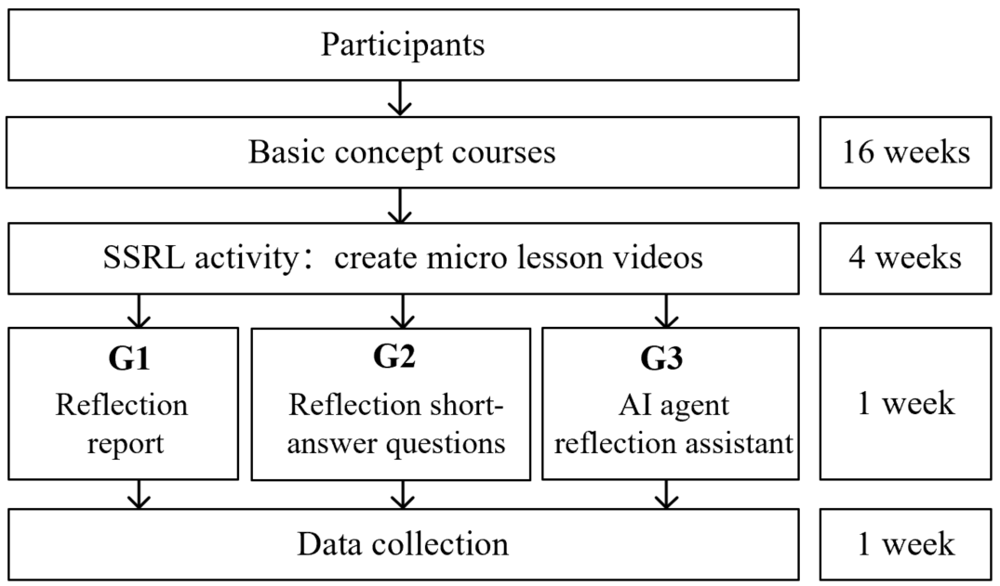
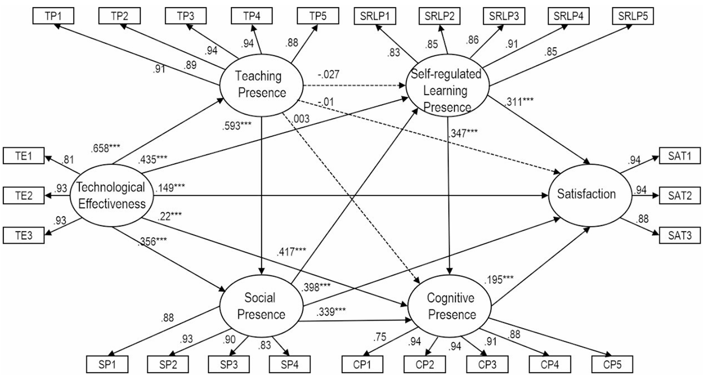
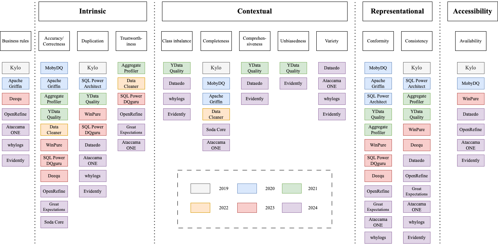
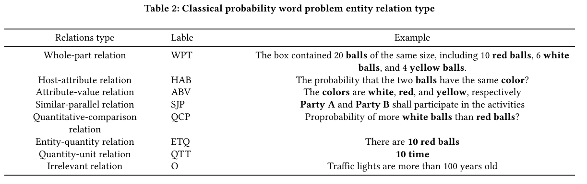

Publications
Tu, F. is bolded throughout. Paper links go to published versions or preprints.
Under Review
-
Under ReviewA Systematic Review of Methodological Tensions in Automated Community of Inquiry AnalysisReview of Educational Research IF 7.4 · 5-Yr IF 15.4 · h5 86 [Paper]
-
Under ReviewMeasuring Cognitive Presence in Online Discussions: Automated Detection and Instructional Insights from a MOOC ContextEducational Technology Research and Development IF 5.3 · h5 83 [Paper]
2026
-
AcceptedJournalEngagement Pathways and Success Factors in a MOOC Certification ProgramThe Internet and Higher Education IF 6.8 · h5 124 [Paper]
-
JournalStructured Flexibility in Microcredentials: A Temporal Analysis of Self-Regulated Achievement PathwaysComputers & Education IF 8.9 · h5 101 [Paper]
-
AcceptedJournalRethinking Engagement: How Active Lurkers and Selective Completers Validate New Pathways to Professional MOOC SuccessSmart Learning Environments IF 4.4 · h5 38 [Paper]
-
PosterBeyond Interaction: Validating New Pathways to Success in MOOC-based MicrocredentialsThe 16th International Learning Analytics and Knowledge Conference (LAK26) [Paper]
-
PosterMeasuring Cognitive Presence in Online Discussions: Interpretable AI and Instructional Insights from a MOOC ContextThe 2026 International Conference of the Learning Sciences (ICLS) [Paper]
2025
-

JournalHow AI Agents Transform Reflective Practices: A Three-Semester Comparative Study in Socially Shared Regulation of LearningComputer Standards & Interfaces, 104094. IF 3.1 · h5 80 [Paper] -
JournalUnpacking the Effects of Role Assignment on Interaction Processes in Socially Shared Regulation of Learning: A Multi-Method ApproachJournal of Educational Computing Research IF 4.9 · h5 61 [Paper]
-
 JournalExploring the Influence of Regulated Learning Processes on Learners' Prestige in Project-Based LearningEducation and Information Technologies, 30(2), 2299–2329. IF 5.4 · h5 97 [Paper]
JournalExploring the Influence of Regulated Learning Processes on Learners' Prestige in Project-Based LearningEducation and Information Technologies, 30(2), 2299–2329. IF 5.4 · h5 97 [Paper]
2024
-

JournalExamining Factors Influencing Online Adult Learners' Satisfaction with Blended Synchronous LearningEducation and Information Technologies, 1–24. IF 6.8 · h5 124 [Paper] -

InvitedConferenceA Survey on Data Quality Dimensions and Tools for Machine Learning2024 IEEE International Conference on Artificial Intelligence Testing (AITest), pp. 120–131. [Paper] -
Book ChapterData Quality: Models, Measures, and ToolsIn Springer Handbook of Data Engineering (in press). Springer. [Paper]
2022
-
ConferenceA Review of Intelligent Application of Educational Knowledge Graph from the Perspective of Artificial Intelligence2022 International Symposium on Educational Technology (ISET), pp. 195–199. IEEE. [Paper]
2021
-

ConferenceResearch on Entity Relation Extraction Based on BiLSTM-CRF Classical Probability Word ProblemsProceedings of the 13th International Conference on Education Technology and Computers, pp. 62–68. ACM. [Paper]